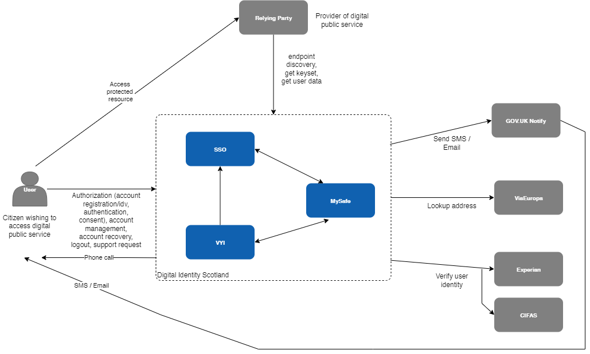
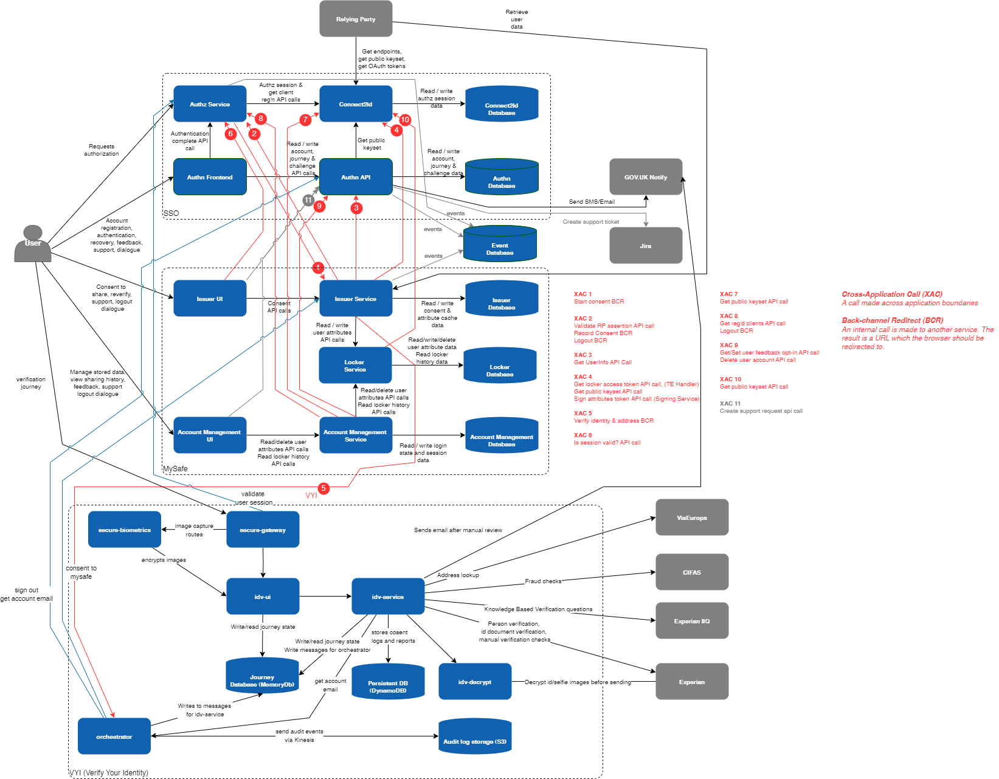
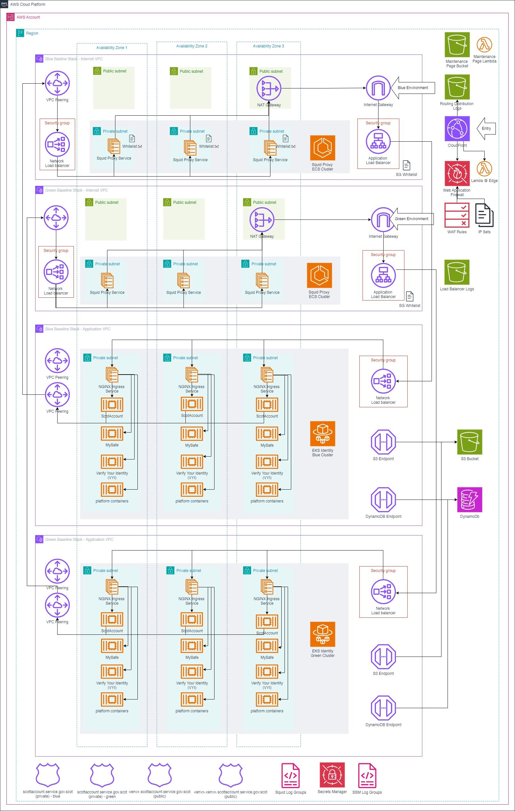

Overview
Architectural documentation curating the designs of the constituent parts of the Digital Identity service. It currently provides 3 distinct services: Authentication and Identity Verification and Issuer services. These are provided to Relying Parties using a OIDC (Open ID Connect) auth code flow with PKCE.
The table below summarises the key points on each flow.
| Capability Provided | Scope | GPG Standards | Description |
|---|---|---|---|
| Authentication | openid | gpg44 medium | OIDC authorisation requests must contain the openid scope value to indicate that an application intends to use the OIDC protocol. The ID token obtained at the end of this flow has a Sub field which is a UUID which unique and persistent identifies a user. i..e every time the same user logs on an id token with the same Sub will be produced. |
| Identity Verification | openid gpg-45-medium |
gpg45 medium | Before an Identity verification flow can be run an authentication flow MUST have been completed. OIDC authorisation requests must contain the openid and the gpg-45-medium scope values to indicate that an application intends to use the OIDC protocol. |
System Context View
This model describes the external environment in which the Digital Identity Scotland system operates and identifies the parties which interact with or are used by the system.

The Digital Identity Scotland service has a customer/supplier relationship with each enrolled public sector body. The public sector body is identified in this document as the relying party. Users (i.e. citizens of Scotland) will continue to be identified as user.
Container View

Deployment Diagram
This diagram shows the key network topology and services used in the ScotAccount application. It shows the correct network ingress and egress routes as well as illustrating the availability zone distribution of key components. This diagram was based on the code in the repository as well as the information discovered using the AWS portal.
